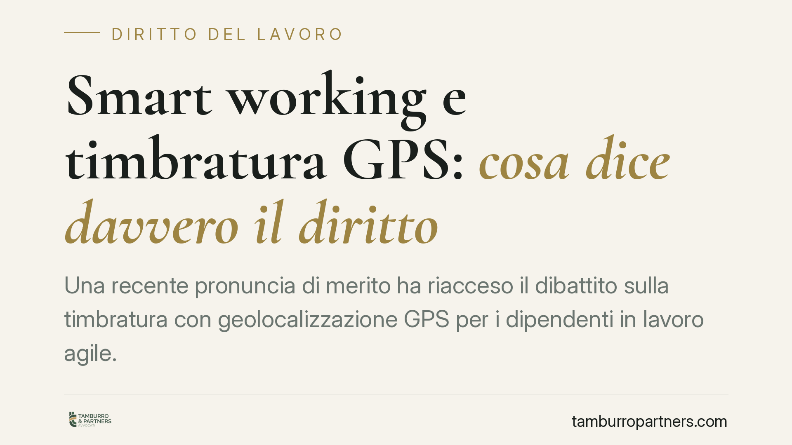

Smart working e timbratura GPS: cosa dice davvero il diritto
Una recente pronuncia di merito ha riacceso il dibattito sulla timbratura con geolocalizzazione GPS per i dipendenti in lavoro agile. Il tema è concreto: sempre più aziende chiedono ai collaboratori di marcare la presenza da remoto. Ma il confine tra rilevazione puntuale e controllo a distanza è sottile e la disciplina resta rigorosa. Vediamo perché serve prudenza.

Il caso e una premessa necessaria
Una recente pronuncia di merito ha ritenuto lecita, in un caso specifico, la timbratura con geolocalizzazione GPS per lavoratori in smart working, limitata al solo momento della marcatura. Prima di trarne conclusioni operative, due avvertenze.
La prima: si tratterebbe di una decisione di primo grado, la cui efficacia è limitata al caso deciso. Non fa giurisprudenza consolidata e non può essere letta come un via libera generalizzato alla geolocalizzazione dei dipendenti.
La seconda: gli estremi di alcune pronunce circolate in rete non risultano compiutamente verificabili. Preferiamo quindi ragionare sui principi, che restano fermi a prescindere dal singolo provvedimento.
Inquadramento normativo
Il perno è l'art. 4 della Legge 300/1970 (Statuto dei Lavoratori). Il comma 1 sottopone ad accordo sindacale o autorizzazione amministrativa gli impianti e gli strumenti da cui possa derivare anche un controllo a distanza dell'attività dei lavoratori, ammessi solo per esigenze organizzative, produttive, di sicurezza o di tutela del patrimonio. Il comma 2 esclude invece tale procedura per gli strumenti di registrazione degli accessi e delle presenze.
Qui sta il punto critico. È tentante ricondurre la timbratura GPS al comma 2, come mera registrazione delle presenze. Ma l'assimilazione non è affatto pacifica. Il Garante Privacy e la Cassazione tendono a qualificare la geolocalizzazione come strumento potenzialmente idoneo al controllo a distanza dell'attività, ricadente quindi nel comma 1, con conseguente necessità di accordo o autorizzazione. Presentare il GPS come semplice "marcatempo" è una forzatura che espone a contestazioni.
Sul fronte privacy, chi tratta dati di geolocalizzazione deve individuare una base giuridica adeguata ai sensi dell'art. 6 GDPR. Nel rapporto di lavoro il consenso del dipendente è generalmente considerato inidoneo, per lo squilibrio di potere tra le parti (Considerando 43 GDPR, prassi EDPB e Garante). Le basi realistiche sono altre: l'esecuzione del contratto, l'obbligo legale o il legittimo interesse del datore, sempre da valutare in concreto. Restano vincolanti i principi di minimizzazione e proporzionalità (art. 5 GDPR).
Il contesto è quello del lavoro agile, disciplinato dalla Legge 81/2017, che valorizza flessibilità e autonomia nell'organizzazione della prestazione: un modello poco coerente con il tracciamento continuo del lavoratore.
Implicazioni pratiche
Per il datore di lavoro il messaggio è: il problema non è *se* rilevare la presenza, ma *come*. Un dato di posizione raccolto solo nell'istante della timbratura, senza tracciamento continuativo degli spostamenti, è profondamente diverso da un monitoraggio in tempo reale della localizzazione durante la giornata.
Il primo può essere sostenibile, a determinate condizioni; il secondo è quasi sempre eccessivo e sproporzionato. La differenza si gioca sulla configurazione tecnica del sistema e sulla documentazione a supporto.
Per il lavoratore, ciò significa che non ogni richiesta di timbratura geolocalizzata è legittima. Vanno verificate informativa, finalità dichiarate e limiti effettivi del trattamento.
Cosa fare in concreto
- Verificate la configurazione tecnica: assicuratevi che il sistema rilevi la posizione solo all'atto della marcatura, senza tracciamento continuo. Il dato deve essere puntuale, non un pedinamento digitale.
- Individuate la base giuridica corretta: non affidatevi al consenso del dipendente. Valutate esecuzione del contratto, obbligo legale o legittimo interesse, documentando la scelta.
- Svolgete una DPIA: la valutazione d'impatto sulla protezione dei dati è, di regola, necessaria per trattamenti di geolocalizzazione ed è il luogo dove dimostrate proporzionalità e minimizzazione.
- Valutate la procedura ex art. 4 co. 1: nel dubbio sulla qualificazione dello strumento, attivate l'accordo sindacale o l'autorizzazione all'Ispettorato del Lavoro. È la via più prudente.
- Fornite un'informativa chiara e specifica: indicate finalità, tempi di conservazione, modalità di raccolta e diritti dell'interessato ai sensi degli artt. 13 e 14 GDPR.
Consigliamo un esame caso per caso: le soluzioni standardizzate, in questa materia, sono spesso quelle più esposte a rischio. Una singola pronuncia favorevole non modifica il quadro dei principi, che restano stringenti.
Disclaimer
Contributo informativo a cura di Tamburro & Partners - Avv. Giuseppe Tamburro. Non costituisce parere legale.
Ogni storia di lavoro ha i suoi tempi.
Se gestisci HR e vuoi un confronto su contenzioso, ispezioni o licenziamenti, scrivi allo studio. Ti rispondiamo entro un giorno lavorativo.